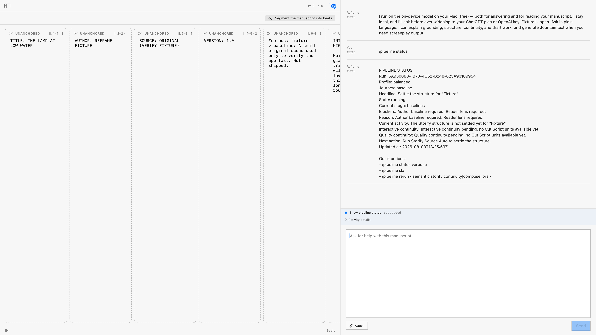

Read-only
The persisted round recorded viewContentMutated=false and storedDraft=false.
/pipeline statusA read-only view of current pipeline truth: state, stage, blockers, current activity, and next action.
It does not mutate the draft or widen a provider lane. The observed fixture was still waiting for an author baseline and reader lens.

The persisted round recorded viewContentMutated=false and storedDraft=false.
Three fixture runs recorded requested, accepted, running, and succeeded lifecycle phases.
No released App build is claimed. The release allow-list remains empty.